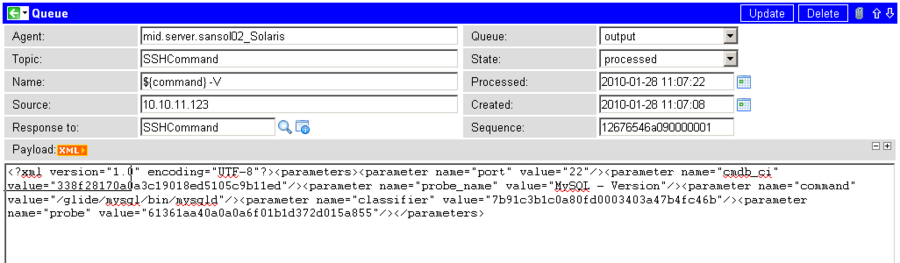

ECC Queue
| |
Note: This article applies to Fuji. For more current information, see The ECC Queue for Discovery at http://docs.servicenow.com
The ServiceNow Wiki is no longer being updated. Please refer to http://docs.servicenow.com for the latest product documentation. |
1 Overview
The External Communication Channel (ECC) Queue is simply a database table, just like any other database table in the system (see the example record below). However, unlike the other tables in the system, the ECC Queue is normally queried, updated, and inserted into by other systems. Each record in the ECC Queue is a message, either from the ServiceNow instance to some other system (an output message), or from some other system to the ServiceNow instance (an input message) The ECC Queue is the normal connection point (though not the only possible one) between a ServiceNow instance and other systems that integrate with it. It's also the point in the ServiceNow instance to which the MID Server, used in Discovery, Orchestration, and some integrations connect. The following record displays the payload of a Discovery probe.
|  |
{kind=link}
2 ECC Queue Fields
The ECC Queue record provides the following fields:
| Field | Input Value |
| Agent | The name of the external system that this messages is either from or to. If the message is from or to a MID Server, the agent name is in the form mid.server.xxx, where xxx is the name of a particular MID Server. |
| Topic | The content of this field is arbitrary; it is intended as a way to inform the recipient of the message about what kind of message it is. In Discovery, it is name of the probe the MID server is to run (or ran, if this message is a response from a MID server). |
| Name | The content of this field is arbitrary; it is intended as a way to inform the recipient of the message of more detail than the Topic field provides. In Discovery, it is either a descriptive name for human use, or the actual command the probe is to run (or ran). For example, if Topic is SSHCommand, then the Name field contains the actual shell command to run. |
| Source | The content of this field is arbitrary; it is intended as a way to inform the recipient of the detailed recipient or target of this message. In Discovery, the Source field usually contains the IP address that the probe is to run against (or ran against). A few probes run against multiple IP addresses; in those cases, this field contains a human-readable description. |
| Response to | This optional field contains a reference (sys_id) to the ECC Queue message that this message is in response to. Discovery makes extensive use of this field to track the hierarchy of messages that result from a given scheduled Discovery. |
| Queue | This field determines whether this message is an input message or an output message, by being set to input or output, respectively. |
| State | This field is initially set to ready when any message is inserted into the ECC Queue. For output messages, the recipient of the message is responsible for updating this field to processing (when it starts processing the message) and processed (when it has completed processing the message). For input messages, the ServiceNow instance is responsible for updating this field to processing or processed as it begins and completes processing of the message. Generally speaking, this processing occurs in business rules (on the ECC Queue) that watch for incoming messages being inserted. Note that in all cases, the processing state is optional – it is perfectly acceptable for message states to be updated directly from ready to processed. |
| Created | The time when this message was created. |
| Processed | The time when this message was processed |
| Sequence | The unique sequence number for this message. This value is automatically generated when an ECC Queue record is inserted. Its use is deprecated. |
| Error string | An error message if an error occurred during processing (this field is hidden on the standard form unless there was an error). |
| Payload | The body of the message. The contents of this field is arbitrary; generally it is different for each system that messages are being exchanged with. Discovery uses XML documents for the payload. The returned XML document has a root tag of <results> containing one or more <result> tags and a single <parameters> tag. The parameters are simply an echo of those sent to the MID server in the probe; they vary from probe to probe, but in general they tell the probe the details of what it is to do and how it should behave. The result tags are the most interesting ones: they contain the actual data generated by the probe. |
3 Managing Table Size for Discovery
The ECC Queue table retains messages sent out to MID servers, and the messages received from MID servers. If Discovery is running on an instance, the size of this table can grow to several gigabytes. Most of the accumulated data is unnecessary, but some entries might be important for troubleshooting any problems with Discovery. For example, if Discovery is not properly capturing the disk drives on a particular Windows server, look in the ECC Queue at the data returned by the Windows - System Information probe. The best practice is to retain ECC Queue data from Discovery for at least a month.
By default, records in the ECC Queue older than 7 days are deleted automatically. Customers can set the deletion schedule by updating the table rotation schedule for the ECC queue.
{kind=link}
Contents > Deliver > IT Operations Management > Discovery
Contents > Deliver > IT Operations Management > Orchestration > ECC Queue
Contents > Integrate